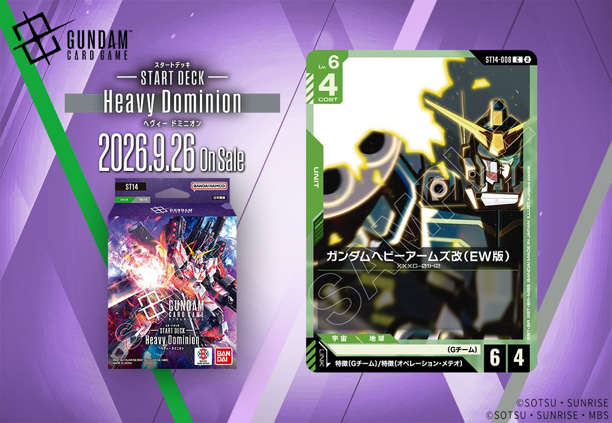

今回は2つの拡張パックから3枚のカードを紹介します。ST14からは緑のUNIT「ガンダムヘビーアームズ改（EW版）」（ST14-008）が登場し、特徴にGチームを持つPILOTとのリンクを備えます。ST12からは紫のPILOT「プルトゥエルブ」（ST12-012）と紫のUNIT「ユニコーンガンダム2号機 バンシィ(デストロイモード)」（ST12-006）が収録され、いずれも「マリーダ・クルス」とのリンクを持ちます。3枚とも2026年9月26日発売です。

ガンダムヘビーアームズ改（EW版） (ST14-008)
| 色 | 緑 | タイプ | UNIT |
| Lv | 6 | コスト | 4 |
| AP | 6 | HP | 4 |
| 特徴 | 〔Gチーム〕、〔オペレーション・メテオ〕 | ||
| リンク条件 | 特徴にGチームを持つPILOT | ||
COST4でAP6/HP4のバニラユニットで、緑のLv.6帯としては攻撃寄りのステータスが目を引きます。効果を持たない分、リンク先である〔Gチーム〕特徴のパイロット（ヒイロ・ユイ ST02-010等）で補強する運用が前提になります。 ピースミリオン(GD03-125)の【ターン1回】はLv.6以上の〔Gチーム〕味方がバトルダメージで相手ユニットを破壊したとき回復でき、Lv.6のこのユニットは条件を満たすため相性が良い一枚です。2026-09-26発売のST14収録カードです。

プルトゥエルブ (ST12-012)
| 色 | 紫 | タイプ | PILOT |
| Lv | 4 | コスト | 1 |
| 補正 AP | 1 | 補正 HP | 2 |
| 特徴 | 〔地球連邦〕、〔強化人間〕 | ||
| リンク条件 | 「マリーダ・クルス」 | ||
効果: このカードのカード名は「マリーダ・クルス」としても扱う。【バースト】このカードを手札に加える。【リンク時】自分のデッキを上から2枚見て、その中のカード1枚を上に戻す。残ったカードは自分のトラッシュに置く。シールドが3つ以下のプレイヤーがいるなら、デッキに戻すかわりに手札に加える。
プルトゥエルブ(ST12-012)はCOST1・AP1/HP2の紫のパイロットで、カード名を「マリーダ・クルス」としても扱うためリンク先「マリーダ・クルス」を含む名称参照との親和性が高い。【リンク時】でデッキ上2枚を確認して1枚を上に戻し残りをトラッシュへ送るデッキ操作を持ち、シールドが3つ以下のプレイヤーがいる場合は手札に加える選択肢へ切り替わる点が状況次第で柔軟に働く。 【バースト】でこのカードを手札に加えられるためシールド経由でも損失になりにくく、2026-09-26発売のST12収録カードとして低コストで運用しやすい一枚。


ユニコーンガンダム2号機 バンシィ(デストロイモード) (ST12-006)
| 色 | 紫 | タイプ | UNIT |
| Lv | 6 | コスト | 5 |
| AP | 5 | HP | 4 |
| 特徴 | 〔地球連邦〕 | ||
| リンク条件 | 「マリーダ・クルス」 | ||
効果: 【セット中】【起動・メイン】自分のトラッシュのカード4枚をゲームから除外する: このターン中、このユニットは《先制攻撃》を得る。(アタック中のこのユニットは、相手より先にダメージを与える)【起動・アクション】自分のトラッシュのカード4枚をゲームから除外する: このバトル中、このユニットは《制圧》を得る。(アタックでシールドに与えるダメージは、先頭から2つに同時に与えられる)
COST5でAP5/HP4のLv.6ユニットながら、両効果ともトラッシュのカード4枚除外という重いコストを要求する。【セット中】で《先制攻撃》、【起動・アクション】で《制圧》を付与でき、シールドへの2枚同時ダメージと相手より先のダメージ計算を状況に応じて使い分けられる点が特徴。 リンク先は「マリーダ・クルス」で、両効果ともトラッシュ資源を消費するため、それを供給できる構築との併用が前提となる。2026-09-26発売のST12収録カード。

関連カード
-
 ウイングガンダムゼロ(GD01-024)緑系デッキ内採用率14.1% (720デッキ)
ウイングガンダムゼロ(GD01-024)緑系デッキ内採用率14.1% (720デッキ) -
 ウイングガンダム(ST02-001)緑系デッキ内採用率13.6% (693デッキ)
ウイングガンダム(ST02-001)緑系デッキ内採用率13.6% (693デッキ) -
 ヒイロ・ユイ(ST02-010)緑系デッキ内採用率13.5% (691デッキ)
ヒイロ・ユイ(ST02-010)緑系デッキ内採用率13.5% (691デッキ) -
 ピースミリオン(GD03-125)緑系デッキ内採用率13.1% (668デッキ)
ピースミリオン(GD03-125)緑系デッキ内採用率13.1% (668デッキ) -
 アルトロンガンダム(GD03-018)緑系デッキ内採用率6.3% (324デッキ)
アルトロンガンダム(GD03-018)緑系デッキ内採用率6.3% (324デッキ) -
 ヒイロ・ユイ(GD05-098)白系デッキ内採用率0.1% (5デッキ)
ヒイロ・ユイ(GD05-098)白系デッキ内採用率0.1% (5デッキ) -
 ヒイロ・ユイ(GD05-098_p1)白系デッキ内採用率0% (0デッキ)
ヒイロ・ユイ(GD05-098_p1)白系デッキ内採用率0% (0デッキ) -
トロワ・バートン(GD05-099)白系デッキ内採用率0% (0デッキ)
-
 カトル・ラバーバ・ウィナー(GD05-100)白系デッキ内採用率0.1% (7デッキ)
カトル・ラバーバ・ウィナー(GD05-100)白系デッキ内採用率0.1% (7デッキ) -
ユニコーンガンダム2号機 バンシィ(デストロイモード)(ST12-006)NEW紫系 — 同色・共通特徴: 地球連邦（新カード）